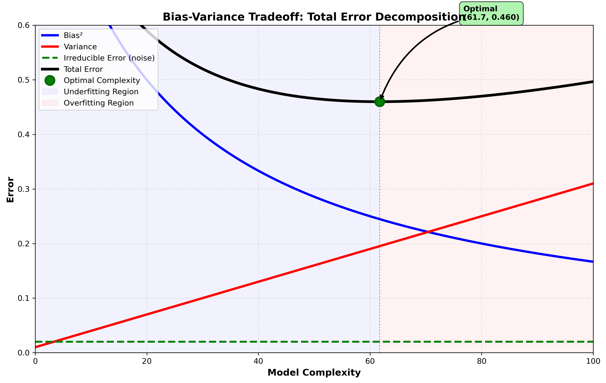
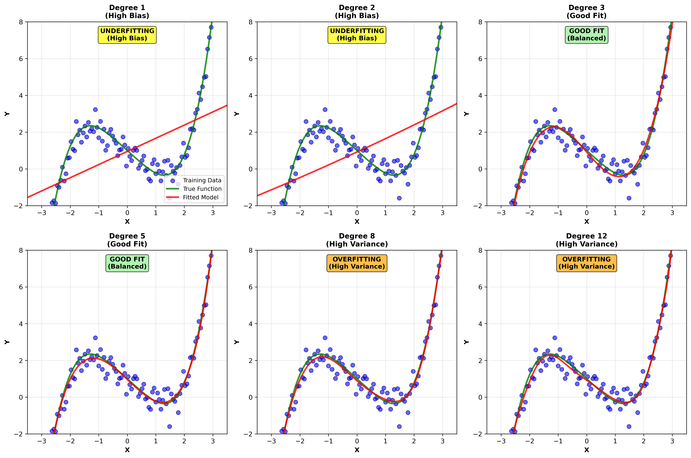
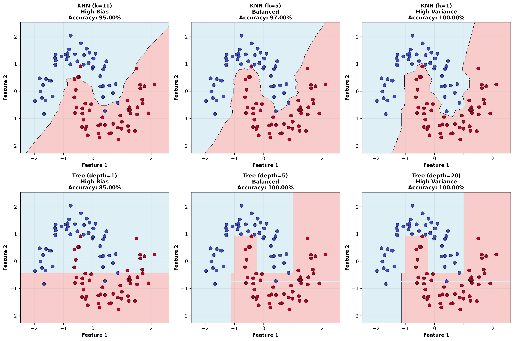

Bias - Variance Decomposition
Prediction error can be decomposed into three irreducible components: bias, variance, and noise. Understanding this decomposition is essential for:
Diagnosing why a model performs poorly
Selecting appropriate model complexity
Understanding overfitting and underfitting
Designing effective regularization strategies
Expected Prediction Error
Consider a regression problem where we have:
where:
\(Y\) is the target variable
\(X\) is the input feature vector
\(f(X)\) is the unknown true function
\(\epsilon \sim \mathcal{N}(0, \sigma_\epsilon^2)\) is irreducible noise
Goal: Estimate \(f(X)\) with a learned function \(\hat{f}(X)\) using training data \(\mathcal{D}\).
Expected Squared Error
For a test point \((X_0, Y_0)\), the expected squared error is:
Step 1: Expand the squared error
Step 2: Substitute the true model
Since \(Y_0 = f(X_0) + \epsilon\):
Step 3: Expand and separate terms
Step 4: Simplify using independence
Since \(\epsilon\) is independent of both \(f(X_0)\) and \(\hat{f}(X_0)\), and \(\mathbb{E}[\epsilon] = 0\):
Step 5: Complete the decomposition
Add and subtract \((\mathbb{E}_\mathcal{D}[\hat{f}(X_0)])^2\):
The Fundamental Bias-Variance Decomposition
The above derivation yields the fundamental decomposition:
Bias Term:
Represents the systematic error due to model assumptions. A model with high bias makes strong assumptions about the data (e.g., linear when data is nonlinear).
Variance Term:
Represents the sensitivity of the model to fluctuations in the training data. High variance means small changes in training data lead to large changes in predictions.
Irreducible Error (Noise):
The inherent randomness in the target variable that cannot be explained by features, regardless of model quality.
Expected Test Error (Integrated)
Averaging over the entire test set:
This is the total expected test error that we aim to minimize.
Detailed Analysis of Bias and Variance
Bias: Definition and Interpretation
Mathematical Definition:
Interpretation:
Bias measures how far the average prediction (over all possible training sets) is from the true value
It reflects the systematic underfitting of the model
Caused by model architecture being too simple to capture true function
Common Sources of Bias:
Linear models on nonlinear data:
True: \(f(X) = X^2 + \sin(X)\)
Model: \(\hat{f}(X) = \beta_0 + \beta_1 X\)
The model cannot capture the nonlinearity, creating high bias.
Missing relevant features:
\[Y = f(X_1, X_2) + \epsilon\]If we only use \(X_1\), we introduce omitted variable bias.
Over-regularization:
Heavy regularization (large \(\lambda\) in \(L = \text{MSE} + \lambda \|w\|^2\)) pushes coefficients toward zero, creating bias.
Variance: Definition and Interpretation
Mathematical Definition:
Alternative form (law of total variance):
Interpretation:
Variance measures how much the predictions vary across different training sets
It reflects overfitting: model fits training noise rather than true signal
High variance indicates the model is too sensitive to training data specifics
Common Sources of Variance:
Complex models with insufficient data:
A 10-degree polynomial fit to 20 data points will vary wildly with small data changes.
Small training set size:
With \(N\) samples, parameter estimates become more unstable.
Under-regularization:
Small \(\lambda\) allows model to fit training noise.
High-dimensional feature spaces:
More parameters to learn with same amount of data → higher variance.
Relationship Between Bias and Variance
Key Trade-off:
Simple models: Low variance (stable across datasets), High bias (miss true pattern)
Complex models: Low bias (can capture patterns), High variance (sensitive to noise)
Mathematical insight:
As model complexity increases:
Total error:
The optimal model complexity minimizes total error, typically at an intermediate complexity level.
Bias-Variance in Different Contexts
Linear Regression
For linear regression \(\hat{f}(X) = X\beta\), with true model \(Y = f(X) + \epsilon\):
Bias of OLS estimator:
If the true model is linear (\(f(X) = X\beta^*\)), OLS is unbiased:
So \(\text{Bias} = 0\) when model is correctly specified.
Variance of OLS estimator:
Increases with:
Noise variance \(\sigma_\epsilon^2\)
High multicollinearity in \(X\) (large \((X^TX)^{-1}\))
More features (larger \((X^TX)^{-1}\))
Regularized Regression
Ridge Regression adds penalty: \(\min_\beta \|Y - X\beta\|^2 + \lambda \|\beta\|^2\)
The estimator becomes:
Bias introduced by regularization:
As \(\lambda \to 0\): Bias \(\to 0\), but Variance \(\to \infty\)
As \(\lambda \to \infty\): Bias \(\to -X\beta^*\), but Variance \(\to 0\)
Optimal regularization balances the two.
Decision Trees and Ensemble Methods
Decision Trees:
Low bias: Can approximate any function given enough depth
High variance: Small training perturbations cause large tree changes
Prone to overfitting on noisy data
Random Forests (Bagging):
Ensemble of \(B\) bootstrap samples, each with tree \(\hat{f}_b(X)\):
Variance reduction:
If trees are not perfectly correlated, variance drops significantly.
Bias remains approximately unchanged (still low, from base tree).
Boosting:
Sequentially builds weak learners, reducing both bias and variance:
Each iteration focuses on residuals from previous iteration, progressively reducing bias.
{kind=link}
Cross-Validation and Bias-Variance
Leave-One-Out Cross-Validation (LOOCV)
LOOCV error estimates:
where \(\hat{f}^{(-i)}\) is trained on all data except observation \(i\).
Property: Nearly unbiased estimator of test error (high-variance estimate, though).
K-Fold Cross-Validation
Splits data into \(k\) folds:
where \(\text{MSE}_j\) is error on fold \(j\).
Tradeoff:
Larger \(k\) (e.g., \(k=n\), LOOCV): Lower bias, higher variance
Smaller \(k\) (e.g., \(k=5\)): Higher bias, lower variance
Standard choice: \(k=5\) or \(k=10\) balances both

Learning Curves: Diagnosing Bias-Variance Problems
Learning curves plot training and validation error versus training set size \(n\).
Underfitting (High Bias):
Both curves plateau at a high error level, with small gap between them.
Overfitting (High Variance):
Large gap persists even with more data; training error stays low while validation error remains high.
Good fit:
Both curves converge with manageable gap.

Model Complexity Examples
Below are examples of fitted models with varying polynomial degrees showing the bias-variance tradeoff:
{kind=link}
Practical Strategies to Control Bias-Variance
Reducing Bias (Model is Too Simple)
Increase model complexity:
Use higher-degree polynomials
Add more features (with caution)
Use nonlinear models (neural networks, kernels)
Reduce regularization:
Decrease \(\lambda\) in ridge/LASSO
Reduce tree depth constraints
Increase ensemble size
Feature engineering:
Add interaction terms
Add polynomial features
Domain-specific transformations
Example: If polynomial regression underfits, increase degree from 2 to 3 or 5.
Reducing Variance (Model is Too Complex)
Decrease model complexity:
Use lower-degree polynomials
Reduce number of features (feature selection)
Limit tree depth, require minimum samples per leaf
Increase regularization:
Increase \(\lambda\) in ridge/LASSO
Add early stopping in boosting/neural networks
Use dropout in neural networks
Get more training data:
\[\text{Var} \propto \frac{\sigma_\epsilon^2}{n}\]Increasing \(n\) reduces variance directly.
Ensemble methods:
Bagging/Random Forests reduce variance without increasing bias
Helps decorrelate predictions across bootstrap samples
Hyperparameter tuning:
Use cross-validation to find \(\lambda\), \(k\), etc. that minimize validation error.

The Bayes Error: Ultimate Lower Bound
Bayes error (also irreducible error):
This is the best possible error using any model, achieved when \(\hat{f}(X) = \mathbb{E}[Y|X]\).
Total error decomposition:
In noisy problems (\(\sigma_\epsilon^2\) large), even perfect models incur significant error.
Practical consequence:
Don’t obsess over achieving zero training error if noise is high
Target validation error near Bayes error + small margin for model imperfection
Bias-Variance in Classification
For classification with 0-1 loss:
Misclassification error:
Bias-variance decomposition still applies but is more nuanced:
Models with high variance may still have low bias in classification if variance is around the correct decision boundary.
Example: A 3-nearest neighbor classifier has higher variance but potentially lower bias than 1-nearest neighbor.
{kind=link}
Summary Table
Aspect |
High Bias |
High Variance |
Balanced |
|---|---|---|---|
Model Type |
Too simple (linear on nonlinear) |
Too complex (overfitting) |
Appropriate complexity |
Training Error |
High |
Low |
Moderate |
Validation Error |
High |
High |
Low |
Train-Val Gap |
Small |
Large |
Small |
Cause |
Underfitting |
Overfitting |
Good fit |
Cure |
Add complexity, features, reduce \(\lambda\) |
Reduce complexity, increase \(\lambda\), get data |
Fine-tune hyperparameters |
Learning Curve |
Both curves high, converge |
Large gap, gap persists |
Small gap, both converge to low error |
References and Further Reading
Geman, S., Bienenstock, E., & Doursat, R. (1992). Neural networks and the bias/variance dilemma. Neural Computation, 4(1), 1–58. Classic paper formalizing the tradeoff for neural nets.
Domingos, P. (2000). A unified bias-variance decomposition. In ICML. Extends the decomposition to many loss functions beyond squared error.
Hastie, T., Tibshirani, R., & Friedman, J. (2009). The Elements of Statistical Learning (2nd ed.). Springer. Chapter 7 provides practical guidance on bias-variance and model selection.
Bishop, C. M. (2006). Pattern Recognition and Machine Learning. Springer. Sections 1.3 and 3.2 connect bias-variance with Bayesian viewpoints.
Kuhn, M., & Johnson, K. (2013). Applied Predictive Modeling. Springer. Chapter 4 covers bias-variance diagnostics with real-world examples.